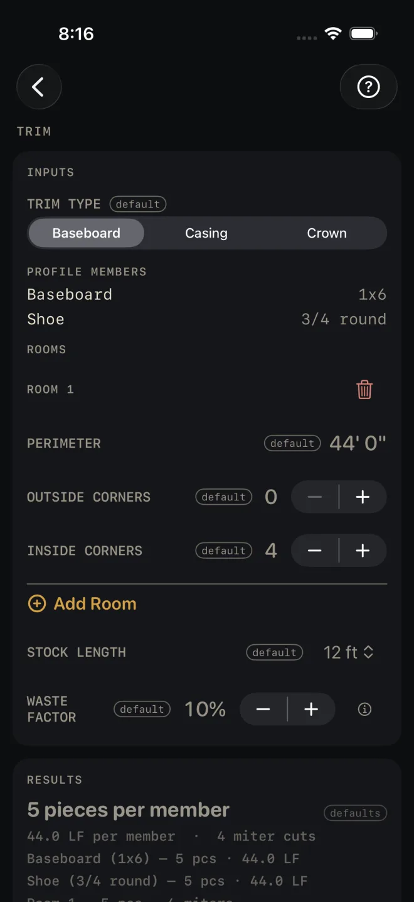
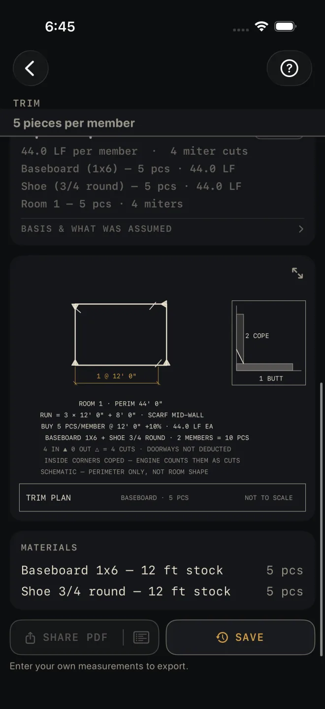

Trim
What it's for
Counting sticks of trim for a list of rooms: baseboard and shoe, door and window casing, or crown. You walk away with pieces to buy in the stock length you choose, the linear feet behind that count, a miter cut count, and a material list. It is an order quantity, not a code check.
Step by step
The example is the screen as it opens: baseboard and shoe around one room with a 44' perimeter and four inside corners, bought in 12 ft sticks.

1 3 4 6 7- TRIM TYPE — Baseboard, Casing or Crown. The room inputs change with it. Leave it at Baseboard.
- PROFILE MEMBERS lists what that trim is built from. Baseboard has two members: Baseboard 1x6 and Shoe 3/4 round. Every member runs the same length, so every member gets the same count. The list is fixed — you read it, you do not edit it.
- PERIMETER — for Baseboard and Crown. Measure along each wall at the floor and add them up. 44' 0" here. Doorways are not taken out.
- OUTSIDE CORNERS and INSIDE CORNERS — count them in the room. 0 and 4 here. They set the miter cut count. They do not change the number of pieces.
- Tap Add Room for each further room. The trash can removes one.
- STOCK LENGTH — the sticks you will buy: 8, 10, 12, 14 or 16 ft. 12 ft here.
- WASTE FACTOR — the extra for miters and bad ends, in steps of 5%. It opens at 10%.
- Read RESULTS: 5 pieces per member, 44.0 LF per member, 4 miter cuts.
- Tap BASIS & WHAT WAS ASSUMED to see how casing and base are measured.
- Check the trim plan under the results.
- Read MATERIALS — Baseboard 1x6 — 12 ft stock, 5 pcs; Shoe 3/4 round — 12 ft stock, 5 pcs. Each row carries its stock length after the dash. Then save or share the job.

8 9 10 11Casing
With TRIM TYPE on Casing the room block asks about openings instead of the perimeter. DOORS is how many doors the room has and DOOR WIDTH is the width of one. WINDOWS is how many windows, and WINDOW WIDTH and WINDOW HEIGHT are the size of one. Measure the opening you are casing. If the doors or windows in a room are different sizes, split them across two rooms so each block holds one size. A door is cased up both legs and across the head. A window is cased on all four sides.
Reading the results
The headline is sticks per member. With two members, as in the example, you buy that many of each — the drawing note reads 2 MEMBERS = 10 PCS. It also shows in a strip under the title whenever the results card is scrolled off screen.
LF per member is the measured run before waste. Waste is added when the run is turned into sticks — the drawing note reads BUY 5 PCS/MEMBER @ 12' 0" +10%.
Miter cuts is the inside corners plus the outside corners, for all rooms. Crown counts two cuts a corner. The drawing note is straight about it: INSIDE CORNERS COPED — ENGINE COUNTS THEM AS CUTS. If you cope your inside corners, read the number as corners to work, not miters to saw.
The member and room lines give each member's pieces and footage, then each room's pieces and miters.
BASIS & WHAT WAS ASSUMED opens one line. Casing is counted per room side, so a door shared by two rooms should be counted in both. The door legs assume a standard-height door, and the line tells you what to add per side for 8-ft doors. Base runs the full perimeter, which leaves you a little over.
The drawing is a trim plan for room 1: how the run breaks into sticks (RUN = 3 × 12' 0" + 8' 0" · SCARF MID-WALL), the corners marked, and a detail of a coped inside corner. The line SCHEMATIC — PERIMETER ONLY, NOT ROOM SHAPE prints in the quiet note ink with the rest of them: the screen only knows the perimeter, so the rectangle is not your room. Pinch to zoom, or tap the expand button at the top right to open it full screen. See Reading the drawing.
SHARE PDF sends a sheet with the drawing, your inputs and the material list. The list icon at its right end sends the material list alone. SAVE puts the job in History. SHARE PDF and the list icon in it stay dim until you change at least one input. SAVE stays lit, but while every input is still a default a tap only answers Enter your job's numbers first and saves nothing.
Common mistakes
- Reading 5 pieces per member as five sticks in all. Baseboard has two members, so it is five of each.
- Picking a STOCK LENGTH shorter than your longest wall when you do not want a scarf joint. The count is by total footage. It does not fit sticks to walls.
- Taking doorways out of PERIMETER and cutting the waste factor as well. The drawing note reads DOORWAYS NOT DEDUCTED, and that footage is part of your overage. Trim one or the other, not both.
- Entering casing for a shared door in one room only. It is cased on both sides.
Related
- Crown Molding — the saw settings for the crown you just counted
- Cut List Optimizer — fitting real wall lengths into sticks
- Flooring
- Paint
- Cut sheets and 1:1 templates
- Saving and History
- Reading the drawing